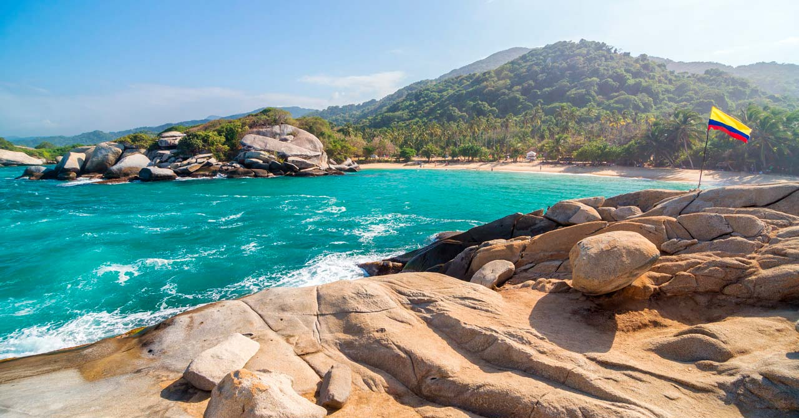
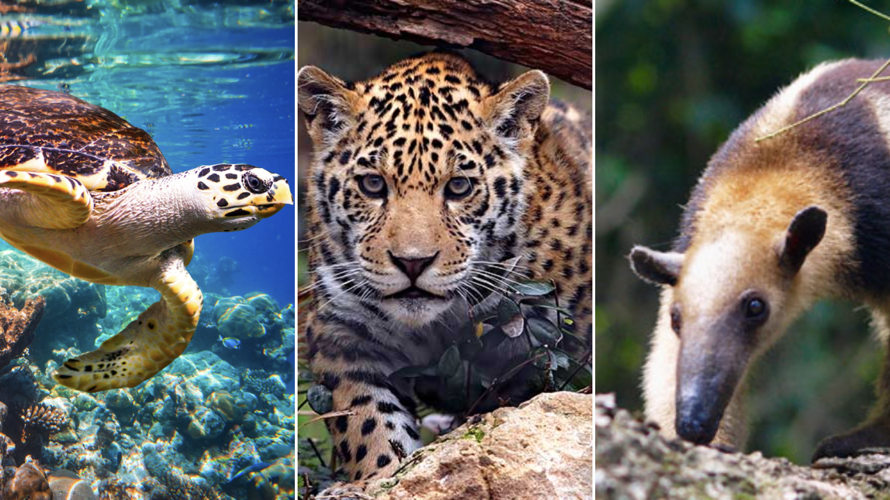
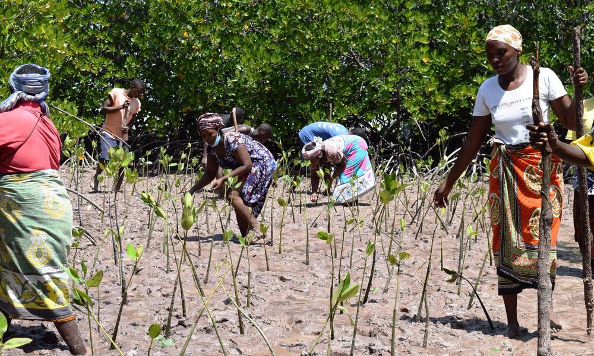

Proyectos de Conservación
Restauración de Ecosistemas Costeros

La restauración de ecosistemas costeros es un esfuerzo dedicado a revitalizar y proteger los ecosistemas
marinos y terrestres que bordean nuestras costas. Este proyecto aborda los desafíos que enfrentan estos
frágiles entornos, como la erosión costera, la degradación del hábitat y la pérdida de biodiversidad. A través
de acciones como la plantación de vegetación nativa, la construcción de estructuras de protección y la
implementación de prácticas de gestión sostenible, se busca recuperar la salud de estos ecosistemas. Además de
brindar refugio a una variedad de especies marinas y terrestres, la restauración de ecosistemas costeros
también proporciona una barrera natural contra tormentas y la intrusión del agua salina, protegiendo las
comunidades locales y sus bienes. Este proyecto promueve la coexistencia armoniosa entre la vida humana y los
delicados ambientes costeros que son vitales para la biodiversidad global y la calidad de vida de las personas
Conservación de Especies en Peligro

Este proyecto tiene como objetivo preservar y proteger especies en peligro de extinción, contribuyendo a la
biodiversidad y al equilibrio de los ecosistemas. A través de estrategias de investigación, monitoreo y manejo
de hábitats, se trabaja para entender las necesidades únicas de estas especies y para mitigar las amenazas que
enfrentan, como la pérdida de hábitat, la caza furtiva y la contaminación. Además, se promueve la
sensibilización pública y la educación ambiental para crear conciencia sobre la importancia de estas especies
y su interconexión con otros seresvivos. La colaboración entre científicos, conservacionistas y comunidades
locales es fundamental para el éxito de este proyecto, que busca asegurar un futuro sostenible para estas
especies en riesgo y para los ecosistemas que habitan.
Reforestación Sostenible en Áreas Degradadas

Este proyecto se centra en la rehabilitación de áreas degradadas y la promoción de la biodiversidad a través
de la reforestación sostenible. Mediante la plantación cuidadosa de especies nativas, se busca restaurar los
ecosistemas locales, aumentar la captura de carbono y proporcionar hábitats para la fauna silvestre. La
comunidad local participa activamente en la siembra y el mantenimiento de los árboles, fomentando así un
sentido de pertenenciay cuidado por el entorno natural. Este proyecto no solo contribuye a la conservación de
la biodiversidad, sino que también tiene impactos positivos en la calidad del suelo, el ciclo del agua y la
belleza escénica del área.